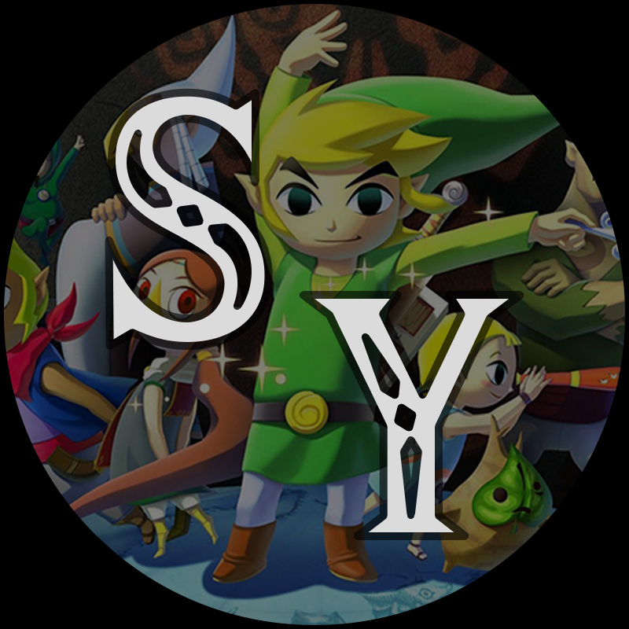

Let's Play #1: EarthBound
(SNES/GBA/Wii U/3DS/NS)
May 29th 2020 - June 18th, 2020
My first Let's Play. This let's play was very much not in my current format as this entire LP was streamed on Twitch. Before the LP, I had played probably about half of the game myself, but I had seen the whole game through multiple times and knew the game quite thoroughly despite not having beaten it myself. The logo above hadn't been used during the LP, simply because I hadn't started making logos for let's plays yet (this was made significantly later).
Let's Play #2: Super Mario Sunshine
(GCN/NS)
June 19th, 2020 - June 9th, 2023
This LP will forever stick out in my mind. You may notice that it took me almost three full years to finish this relatively short game. This game was the first of four games that began before I started making videos consistently. This started back in my streaming era along with another game. Both of these games had been played on an emulator (if you don't know what an emulator is, google it because it will take too long to explain here.) and the saves for said emulator got wiped after I needed to reset my computer. I later came back to this game and the other when I finally had a legitimate way to play them (this also meant replaying to where I was in the LP).
Let's Play #3: Mother/EarthBound Beginnings
(Famicom/GBA/Wii U/NS)
June 20th, 2020 - July 7th, 2023
This was the other game that I had lost my save on after resetting my computer. This one took a bit longer to get a legitimate way to play the game, but I did eventually get a way to play it. This game has a similar history with me as EarthBound has. I had played somewhere from 25-50% of the game in my own time and eventually decided to LP it. I definitely prefer EarthBound over this game, but I do still recommend any RPG fans to check this one out.
Let's Play #4: The Legend of Zelda: Wind Waker
(GCN/Wii U)

July 10th, 2020 - Jan. 26th, 2024
This game was one hell of a ride. This was my first ever time beating a 3D Zelda game and I think I picked a pretty good one for my first. I loved this game all the way through and my only complaint is that I feel like it was a little too easy. If you're not 100%ing the game, that'll certainly add some challenge in some places, but remove some in others (mainly looking at the Savage Labyrinth). I've played other 3D Zelda games before this one, but I would recommend this game as a good starting point if other Zelda games seem too daunting.
Let's Play #5: Super Mario Galaxy
(Wii/Wii U/NS)
April 26th, 2021 - April 21st, 2023
This was my first LP that wasn't done in a emulator. I had obtained what is now a ridiculously complicated setup for capturing console games. This LP sadly doesn't look all that good simply because this is a Wii game and so it was upscaled to be 1080p and so it looks bad. This was the first time that I had completely 100%ed the game, but i had gotten the main 120 stars in my own time at least once. I am still far more familiar with Galaxy 2 since I grew up with that game, but I still had a ton of fun finally 100%ing this game.
Let's Play #6: Pikmin
(GCN/Wii/NS)
Feb. 20th, 2023 - March 20th, 2023
My first start-to-finish LP after I started making videos again. I had played maybe 20 minutes of this game before I went to prepare for the LP. I had seen the entire game, but basically hadn't played it. I played through the game 100% probably a couple of weeks before I recorded the LP so I would actually know what I was doing when I did the LP. This was played in an emulator (with a lot of caution) because some Gamecube/Wii games are a bit too expensive for me to reasonably obtain. This game is much easier to obtain now that it's released on Switch, so if you enjoy Real Time Strategy games, I highly recommend.
Let's Play #7: Super Metroid
(SNES/Wii/Wii U/3DS/NS)
April 24th, 2023 - May 5th, 2023
My shortest LP to date, but one that I have an interesting history with. Before the LP, I had 100%ed Super Metroid probably around 10 or so times, but only maybe 2 of them being beating the game normally. Every other time I've beaten this game, it was as a randomizer (a randomizer is where you take all the items in a game and shuffle where they are). Because I was so used to not being able to play the game normally, this LP was honestly kinda weird. If you like Metroidvania's, play this game, it spawned the term Metroidvania.
Let's Play #8: Grand Theft Auto V
(PS3/PS4/PS5/X360/X1/XSS/XSX/PC)
July 5th, 2023 - Nov. 3rd, 2023
My first finished playthrough of the story mode and likely my last for 100%. Before the LP, I'd played through the first half of the game probably half a dozen times, mostly modded. I really enjoy this game and the story mode is good, but I don't recommend going for 100%. If you play through this yourself, I would only recommend the main story and maybe some of the strangers and freaks missions.
Let's Play #10: Super Mario 64
(N64/Wii/Wii U/NS)
Jan. 29th, 2024 - Mar. 4th, 2024
I've played through this game more times than I can remember. At a guess, I've 100%ed this game over 20 times. This game, in my eyes, is the quintessential 3D platformer. If you haven't played it, you should. It's relatively short and not that hard, so pretty much anyone can pick it up. If you have played it, maybe try some of the speedrunning tricks. 10/10, I highly recommend.
Let's Play #11: Pikmin 2
(GC/Wii/NS)

Mar. 11th, 2024 - June 19th, 2024
This game was one hell of an experience. I loved Pikmin, and this game took the good from that and made it better. It also took the difficulty and cranked it up to 12. There were more than a couple situations that felt downright unfair. If you liked Pikmin and want to try this game, I would still say play it, but you will need far more patience than the first game. Overall, Pikmin 2 is good, but I recommend against getting 100% unless you know what you're getting yourself into.
Let's Play #12: Luigi's Mansion
(GC/3DS)
Apr. 10th, 2024 - May 22nd, 2024
Luigi's Mansion is probably in my top 3 for non-mainline Mario games. There is so much character and charm surrounding the NPCs and bosses. The game is also relatively easy. If you've only ever played the mainline Mario games and you want to try something else, Luigi's Mansion is a fantastic starting point considering its low difficulty and how short the game is.